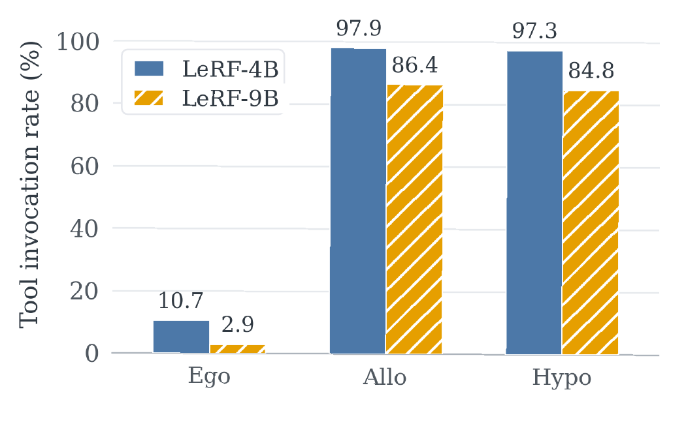
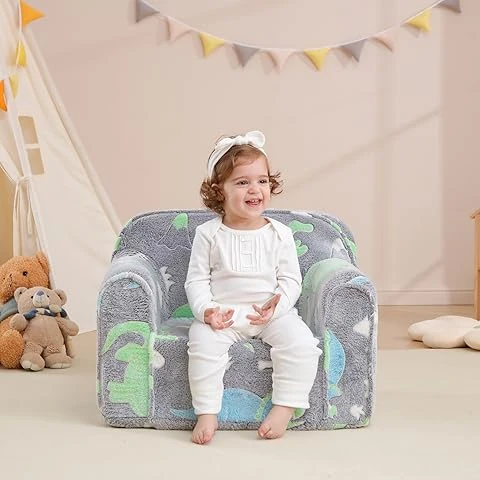
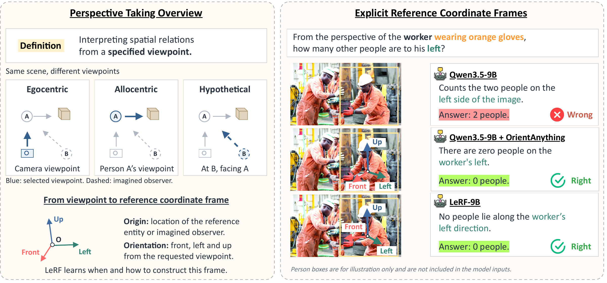
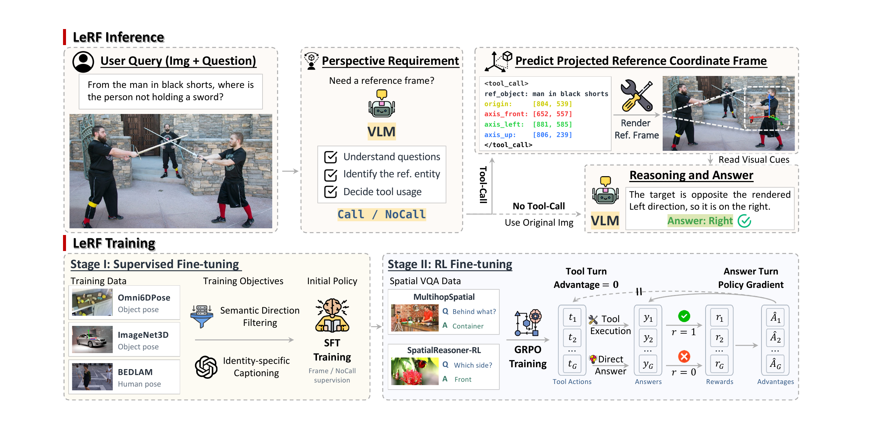
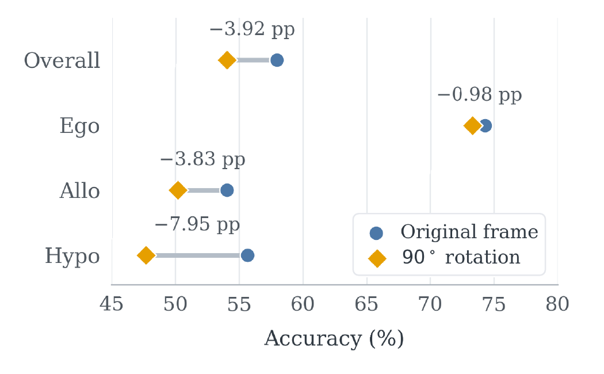
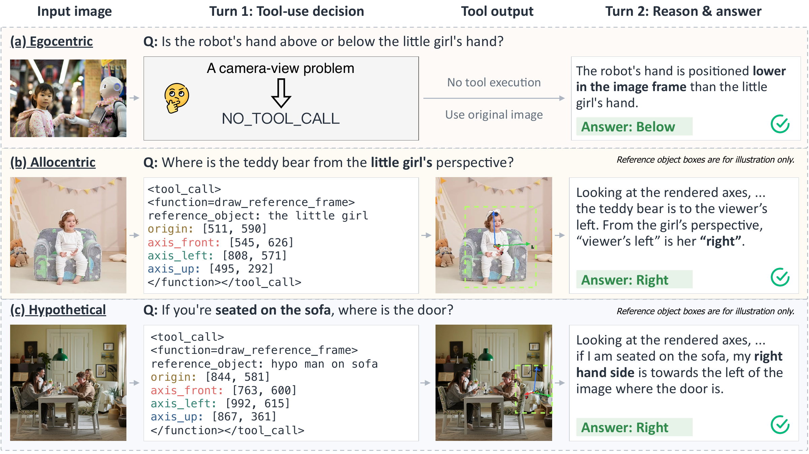
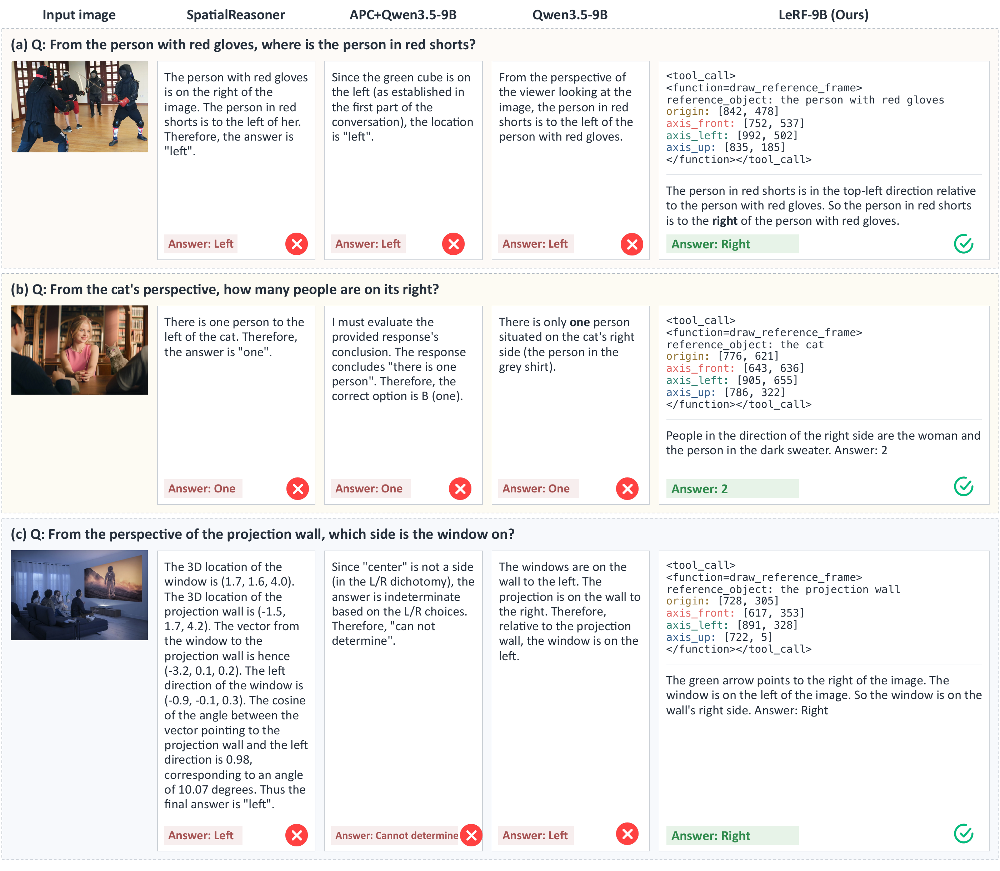

Selective tool invocation


LeRF-9B invokes the renderer for just 2.94% of egocentric questions, versus over 84% of allocentric and hypothetical questions.
✉ Corresponding author
arXiv Preprint

Original imageThe model first identifies the requested viewpoint.
Predicted coordinates will be passed to the renderer.
Where is the teddy bear from the little girl’s perspective?
LeRF predicts its own frame of reference, then reasons over the rendered image. Camera-relative questions can skip frame construction.
Perspective taking requires interpreting spatial relations from a specified viewpoint, yet vision-language models often default to the camera view. LeRF learns to construct and use explicit reference coordinate frames. Given an image and a query, the model decides whether a frame is needed, grounds the reference entity, and predicts an origin with projected front, left, and up axes. A lightweight renderer overlays the frame onto the image, allowing the same model to reason over its own visual cues. Supervised frame prediction followed by reinforcement learning improves perspective-taking performance across three benchmarks, without external perception models or explicit 3D reconstruction at inference time.

LeRF predicts a projected frame directly on the image, without an external perception model or a full 3D reconstruction.

Object and human pose data teach frame prediction. No-tool examples teach the model when the original image is sufficient.
GRPO rewards final-answer correctness on spatial VQA.
LeRF-9B improves over Qwen3.5-9B on all six evaluated tasks that require a viewpoint change.
OmniSpatial-PT · Allocentric
OmniSpatial-PT · Hypothetical
ViewSpatial-Bench · Relative Direction
| Model | OmniSpatial-PT | 3DSRBench | ViewSpatial-Bench | ||||
|---|---|---|---|---|---|---|---|
| Ego | Allo | Hypo | Orientation | Multi-Object | P - Obj. View | P - Rel. Direction | |
| Proprietary models | |||||||
| GPT-5.6-Luna (medium) | 83.33 | 49.73 | 45.78 | 60.04 | 55.34 | 46.99 | 70.07 |
| GPT-5.6-Terra (medium) | 81.37 | 55.85 | 53.01 | 63.32 | 56.39 | 45.08 | 77.20 |
| Claude Sonnet 5 (medium) | 80.39 | 42.55 | 49.40 | 34.94 | 44.77 | 51.31 | 51.43 |
| Claude Sonnet 5 (high) | 84.31 | 48.14 | 45.78 | 43.15 | 46.81 | 51.51 | 60.10 |
| Selected open-source models & LeRF | |||||||
| InternVL3.5-8B | 67.84 | 34.20 | 40.24 | 27.70 | 38.33 | 57.63 | 42.40 |
| GLM-4.6V-Flash | 74.31 | 34.52 | 39.52 | 38.32 | 44.13 | 60.36 | 43.94 |
| SpatialReasoner | 40.39 | 35.11 | 35.66 | 52.05 | 50.64 | 42.37 | 45.61 |
| Qwen3.5-4B | 74.71 | 42.55 | 44.34 | 42.28 | 43.26 | 51.01 | 57.43 |
| LeRF-4B | 72.35 | 49.36 | 46.75 | 45.88 | 44.55 | 56.26 | 67.85 |
| Qwen3.5-9B | 80.20 | 47.13 | 44.58 | 48.17 | 48.66 | 56.23 | 65.51 |
| LeRF-9B | 74.31 | 54.04 | 55.66 | 53.76 | 50.29 | 61.91 | 74.23 |
Selected comparisons from the paper. Bold: best score among displayed open-source methods, including LeRF; proprietary models are listed separately. All models use thinking except SpatialReasoner. Ego / Allo / Hypo denote camera, entity-centered, and imagined viewpoints. ViewSpatial-Bench columns use the person perspective.
The trade-off: camera-view accuracy decreases from 80.20% to 74.31% on OmniSpatial-PT Ego, even as performance improves on viewpoint-changing tasks.

LeRF-9B invokes the renderer for just 2.94% of egocentric questions, versus over 84% of allocentric and hypothetical questions.

Rotating rendered frames by 90° reduces hypothetical accuracy by 7.95 percentage points, indicating that the model uses the directional cues.
LeRF answers directly for a camera-relative query, and constructs reference frames for entity-centered and imagined viewpoints.

Appendix C.3 compares LeRF with SpatialReasoner, APC + Qwen3.5-9B, and Qwen3.5-9B. These examples show how a camera-relative answer can differ from the requested entity-centered answer.

(a) A person’s viewpoint. All three baselines answer “left” in the camera view. LeRF grounds the person with red gloves and answers “right” from that person’s perspective.
(b) A cat’s viewpoint. The baselines count one person. LeRF makes the cat-centered right direction explicit and correctly counts two.
(c) A wall’s orientation. The baselines answer “left” or cannot determine the answer. LeRF uses the projection wall’s intrinsic orientation and identifies the window on its right.
LeRF currently focuses on static images. Occlusion, visual ambiguity, and uncertain entity orientation can affect predicted frames and propagate to answers. Tracking changing reference frames in dynamic scenes remains future work.